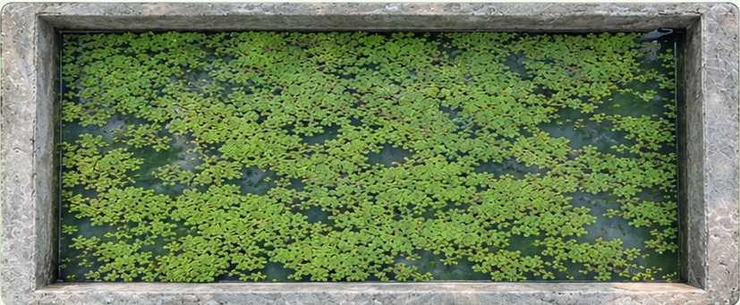

AzollaSense
Welcome Back!

LIVE FEED
Water Level
26 cm
Temperature
36°C
pH Level
7.2
Pond Coverage
75%
Browning Detection
LATEST IMAGE CAPTURED
System Status
Water Level
26 cm
Temperature
36°C
pH Level
7.2
Pond Coverage
75%
Recent Logs
View All >
Pump turned on
Water Level Low
3:45 PM
Browning Detected
2 Sectors Affected
2:20 PM
Canopy Deployed
Sunlight Duration Met
1:00 PM
Settings
Notifications
Enabled
Cloud Sync
Connected
Update Interval
10 Minutes
Preferences
Language
English
Time Format
12-Hour